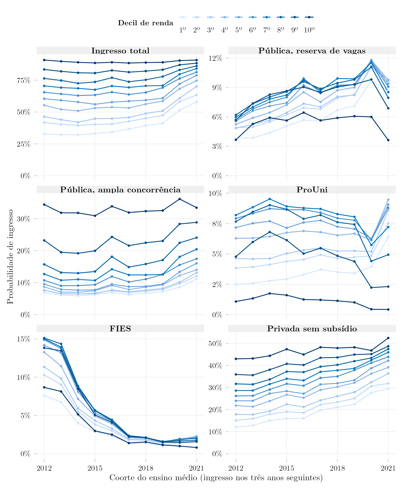
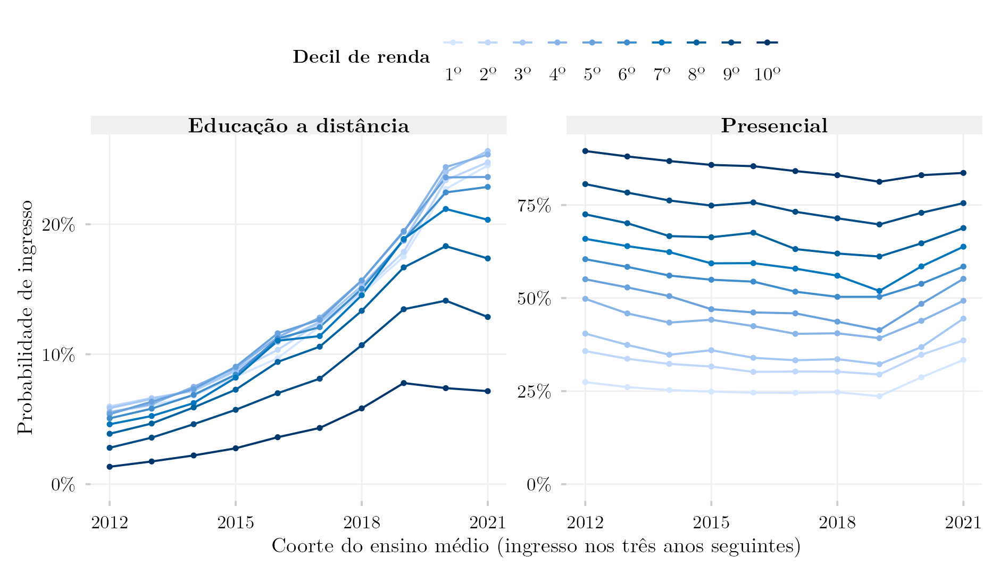
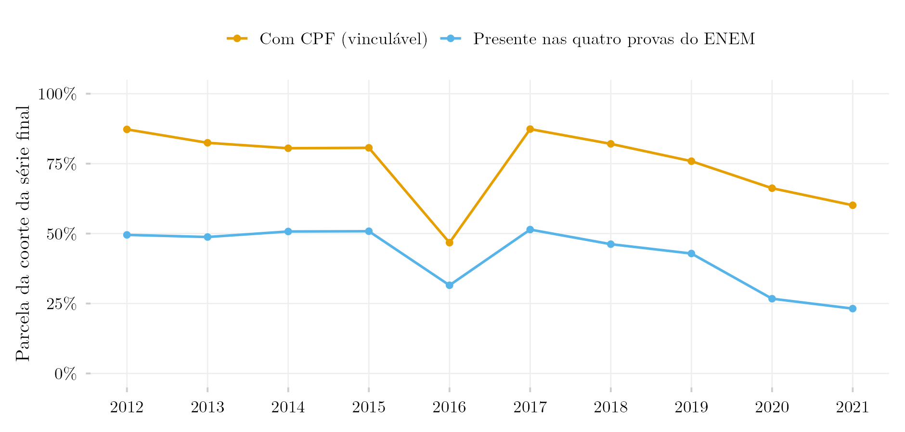

Portas de Entrada no Ensino Superior por Decil de Renda, Coorte a Coorte: 2012 a 2021

Visão Geral
Este post estende a comparação de duas coortes de Portas de Entrada por Decil de Renda per Capita e de Modalidade de Ensino a todas as coortes do ensino médio que os registros vinculados permitem, de 2012 a 2021. Cada linha é um decil de renda; cada ponto é a probabilidade de que um estudante daquele decil e daquela coorte tenha ingressado no ensino superior nos três anos seguintes ao último ano escolar. O primeiro painel é o ingresso total; os outros cinco o dividem por porta: instituição pública por reserva de vaga, instituição pública por ampla concorrência, ProUni, FIES ou instituição privada sem subsídio.
Três movimentos se destacam. O FIES despenca entre as coortes de 2013 e 2015, de 7–15% de cada decil para 3–6%, e continua caindo. O ingresso privado sem subsídio sobe em todos os decis, de 12% para 30% no mais pobre e de 43% para 53% no mais rico entre as coortes de 2012 e 2021. E o ingresso total do decil mais pobre, estável em cerca de um terço até a coorte de 2016, sobe para 41% em 2019 e 58% em 2021, enquanto o decil mais rico fica perto de 90%. Essa última subida coincide com a queda da presença no ENEM nas edições da pandemia e não deve ser lida como mudança real sem levar em conta a figura de cobertura abaixo.
Modalidade

O ingresso em educação a distância sobe em todos os decis, mas muito mais rápido na base: no decil mais pobre, de 5,5% (coorte de 2012) para 17,5% (2019) e 24,5% (2021); no mais rico, de 1,3% para 7,8% e 7,2%. O ingresso presencial cai na maioria dos decis até a coorte de 2019 e se recupera depois, de novo nas coortes com menor cobertura do ENEM.
Cobertura

A população por trás de cada probabilidade é a parte da coorte escolar que tem CPF vinculável e esteve presente nas quatro provas objetivas do ENEM do ano da coorte. Essa parte é cerca de metade da coorte da série final de 2012 a 2017 e cai para 43% (2019), 27% (2020) e 23% (2021). A coorte de 2016 é uma exceção dentro dos anos estáveis: só 47% dos seus estudantes da série final têm CPF no Censo Escolar, contra 81–87% nos anos vizinhos. Quando menos estudantes, e mais selecionados, fazem o ENEM, um decil da amostra restante é outro grupo de pessoas; as subidas das coortes de 2020 e 2021, em particular, misturam mudança no ingresso com mudança em quem é observado.
Metodologia
Coorte e vínculo. Cada coorte é todo estudante matriculado na última série do ensino médio no Censo Escolar do ano da coorte (TP_ETAPA_ENSINO em 27, 28, 29, 32, 33, 34, 37, 38), com 16 a 22 anos, vinculado por CPF mascarado ao ENEM do mesmo ano e ao Censo da Educação Superior dos três anos seguintes.
Presença no ENEM (novo). Os posts anteriores, de duas coortes, vinculavam a coorte à inscrição no ENEM: as tabelas do ENEM têm uma linha por inscrito, inclusive quem faltou. A abstenção varia muito entre edições (29% faltaram à prova de matemática em 2012, 55% em 2020) e tem gradiente de renda, então uma série anual construída sobre a inscrição mudaria de população de um ano para o outro. Aqui o estudante só entra se esteve presente nas quatro provas objetivas (IN_PRESENCA_* até 2014, TP_PRESENCA_* desde 2015). Na coorte de 2013, isso reduz a população de 1.229.035 inscritos para 1.064.350 presentes.
Ingresso, porta e modalidade. Conta como ingressante quem tem algum registro no Censo da Educação Superior com ano de ingresso nos três anos seguintes. Cada ingressante recebe uma porta por prioridade entre todos os seus registros: pública com reserva de vaga (IN_RESERVA_VAGAS), pública por ampla concorrência, ProUni, FIES, privada sem subsídio. A modalidade é EaD se algum registro na janela for a distância (TP_MODALIDADE_ENSINO = 2).
Decis de renda. Faixa de renda familiar declarada (dezessete faixas, pontos médios em salários mínimos) dividida pelo ponto médio do grupo de moradores declarado, como nos posts de duas coortes; os decis são cortados dentro de cada coorte, e as células na fronteira são divididas proporcionalmente. As questões de renda são Q003/Q004 em 2012–2014 e Q006/Q005 desde 2015, conferidas contra os dados pelo script de sondagem abaixo.
Limites.
- A coorte de 2011 fica de fora: a questão de renda do ENEM 2011 usa outro conjunto de onze faixas, cujos pontos médios não foram conferidos.
IN_RESERVA_VAGASestá vazio no Censo da Educação Superior de 2024, então, na coorte de 2021, quem ingressou em 2024 não pode ser identificado como ingressante por reserva de vaga e cai em ampla concorrência; a queda dessa porta na última coorte é um artefato.- Cursos a distância não exigem o ENEM, então as figuras descrevem quem fez o exame, não todos os ingressantes.
- As contagens trazem o ruído de privacidade diferencial da plataforma; a perda de linhas informada é de no máximo 2,3% por consulta (
data/row_loss.csv).
Reprodução
plot.Rlê as tabelas agregadas emdata/e grava as três figuras em inglês e português, maisdata/probabilidades_por_decil.csv, com todos os valores desenhados, edata/cobertura.csv.shared-pipeline/sedap/portas-anuais/010_Sondagem_Anual.Rconfere, ano a ano, as variáveis de renda, moradores e presença do ENEM, a cobertura de CPF do Censo Escolar e as variáveis de porta e modalidade do Censo da Educação Superior (data/sondagem_*.csv).shared-pipeline/sedap/portas-anuais/020_Extrair_Coortes_Anuais.Rroda as duas consultas por coorte e gravadata/matriz_<coorte>_porta.csvedata/matriz_<coorte>_modalidade.csv. Os scripts de extração só rodam com credencial aprovada do INEP exportada comoSEDAP_TOKEN.